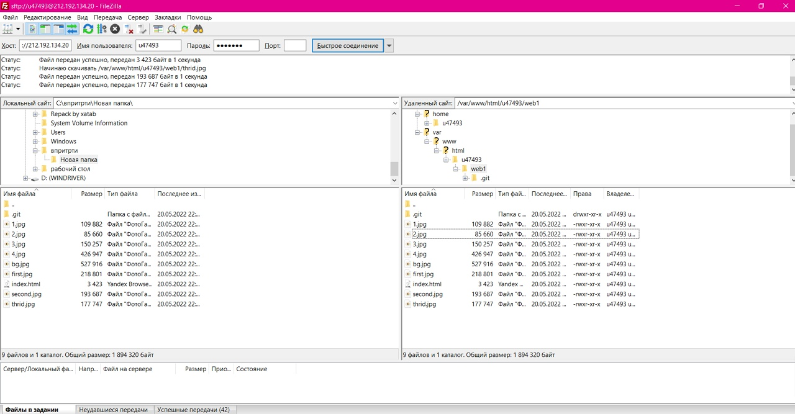

Вход в putty (устанавливает ssh соединение с удаленным сервером, затем идет запрос логина и пароля)

С помощью команды ping (показывает может ли удаленный компьютер подключиться к серверу и задержку подключения) на учебном сервере узнали IP-адрес веб-сервера kubsu.ru
С помощью команды nslookup(для A-записей и mx-записей kubsu.ru и kubsu-dev.ru(запросов в доменной системе имен (DNS) с целью получения доменного имени, IP-адреса или другой информации из записей DNS.)) узнали A-записи ((ANY) возвращает все возможные записи для указанного хоста) и MX-записи (Mail eXchange) хранит соответствие доменного имени почтовому серверу этого домена) домена kubsu.ru и kubsu-dev.ru
С помощью команды whois (команда для проверки даты регистрации домена( показывает не только дату регистрации домена, а также информацию о том кому принадлежит домен его расположение и дату истечения срока домена)) узнали дату регистрации домена kubsu.ru и kubsu-dev.ru,
С помощью SSH склонировали репозиторий в каталог Использовани команды git clone для добавления файлов из репозитория github на удаленный сервер
С помощью программы FileZilla скопировали на локальный компьютер файлы задания
